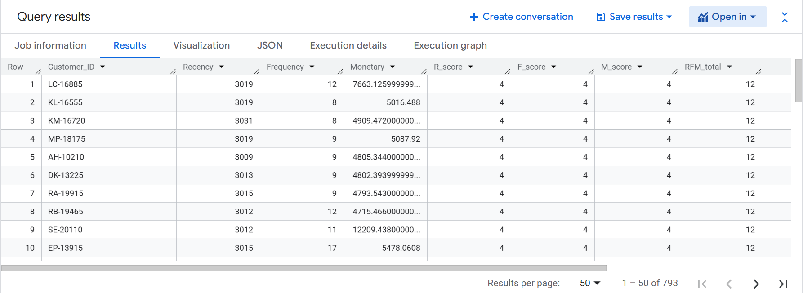
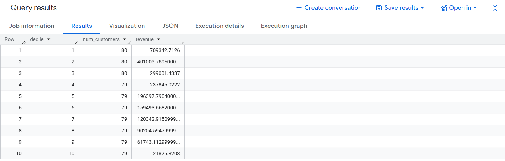
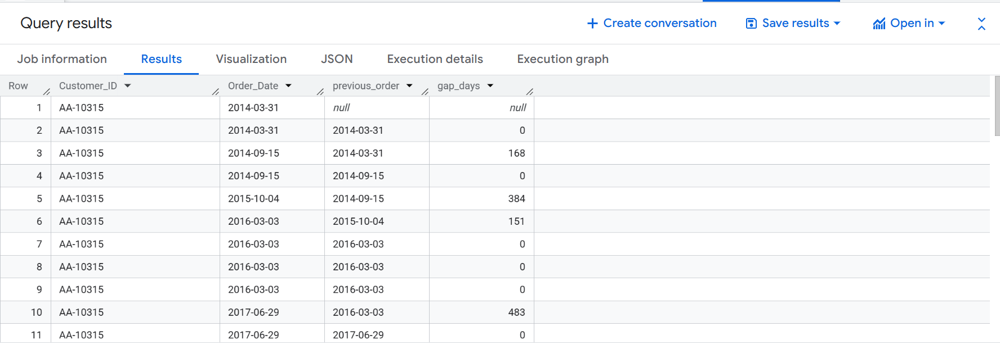

RFM Analysis and Customer Segmentation using SQL (BigQuery)
This project analyzes customer behavior using RFM (Recency, Frequency, Monetary) analysis in BigQuery. It segments customers based on purchasing patterns and identifies high-value customers using SQL window functions.
WITH rfm AS (
SELECT
Customer_ID,
DATE_DIFF(CURRENT_DATE(), MAX(Order_Date), DAY) AS Recency,
COUNT(DISTINCT Order_ID) AS Frequency,
SUM(Sales) AS Monetary
FROM `rfm-analysis-490622.sandbox.sales_data_clean`
GROUP BY Customer_ID
),
rfm_scores AS (
SELECT *,
NTILE(4) OVER (ORDER BY Recency DESC) AS R_score,
NTILE(4) OVER (ORDER BY Frequency) AS F_score,
NTILE(4) OVER (ORDER BY Monetary) AS M_score
FROM rfm
)
SELECT *,
(R_score + F_score + M_score) AS RFM_total
FROM rfm_scores
ORDER BY RFM_total DESC;

WITH customer_sales AS (
SELECT
Customer_ID,
SUM(Sales) AS total_sales
FROM `rfm-analysis-490622.sandbox.sales_data_clean`
GROUP BY Customer_ID
),
ranked AS (
SELECT *,
NTILE(10) OVER (ORDER BY total_sales DESC) AS decile
FROM customer_sales
)
SELECT
decile,
COUNT(Customer_ID) AS num_customers,
SUM(total_sales) AS revenue
FROM ranked
GROUP BY decile
ORDER BY decile;

Top 10% customers contribute ~31% of total revenue.
This indicates a moderate revenue concentration where high-value customers
play an important role, but revenue is still distributed across a wider customer base.
SELECT
Customer_ID,
Order_Date,
LAG(Order_Date) OVER (
PARTITION BY Customer_ID
ORDER BY Order_Date
) AS previous_order,
DATE_DIFF(
Order_Date,
LAG(Order_Date) OVER (
PARTITION BY Customer_ID
ORDER BY Order_Date
),
DAY
) AS gap_days
FROM `rfm-analysis-490622.sandbox.sales_data_clean`
ORDER BY Customer_ID, Order_Date;
